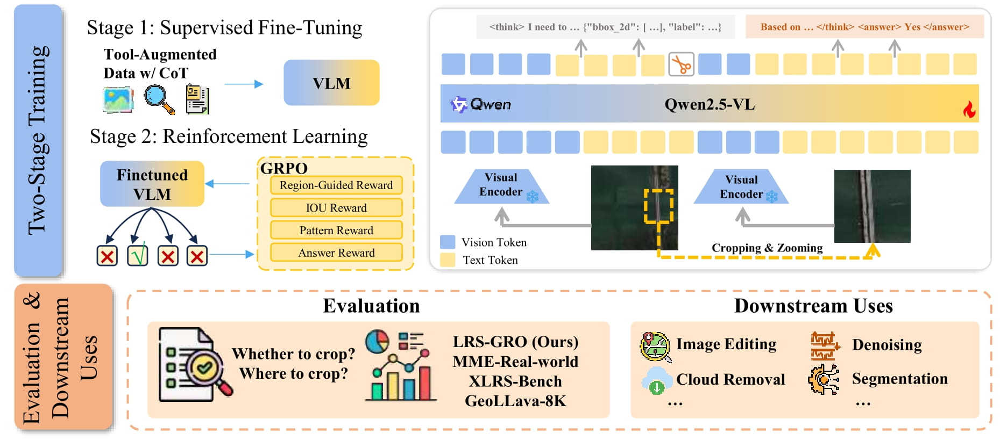
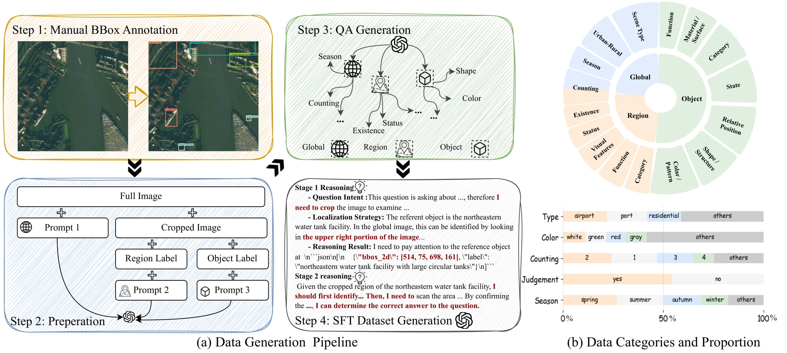
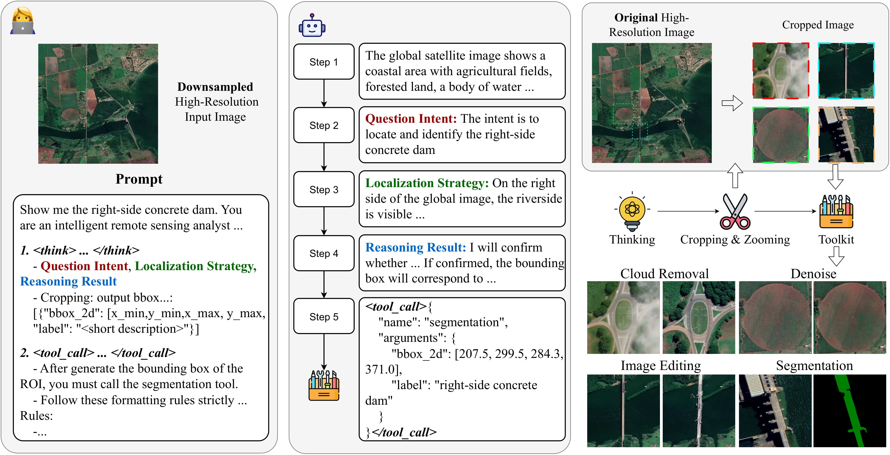
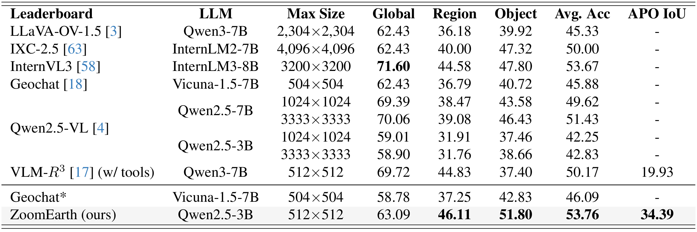
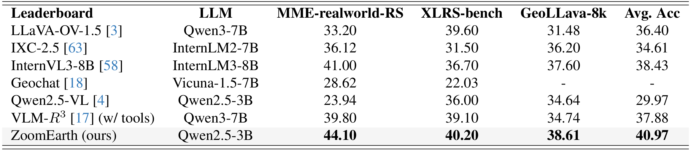

Ultra-high-resolution (UHR) remote sensing (RS) images offer rich fine-grained information but also present challenges in effective processing. Existing dynamic resolution and token pruning methods are constrained by a passive perception paradigm, suffering from increased redundancy when obtaining finer visual inputs. In this work, we explore a new active perception paradigm that enables models to revisit information-rich regions. First, we present LRS-GRO, a large-scale benchmark dataset tailored for active perception in UHR RS processing, encompassing 17 question types across global, region, and object levels, annotated via a semi-automatic pipeline. Building on LRS-GRO, we propose ZoomEarth, an adaptive cropping–zooming framework with a novel Region-Guided reward that provides fine-grained guidance. Trained via supervised fine-tuning (SFT) and Group Relative Policy Optimization (GRPO), ZoomEarth achieves state-of-the-art performance on LRS-GRO and, in the zero-shot setting, on three public UHR remote sensing benchmarks. Furthermore, ZoomEarth can be seamlessly integrated with downstream models for tasks such as cloud removal, denoising, segmentation, and image editing through simple tool interfaces, demonstrating strong versatility and extensibility.



Experiment


BibTeX
@article{your2025paper,
title={ZoomEarth: Paper Title},
author={Author1 and Author2 and Author3},
journal={arXiv preprint arXiv:xxxx.xxxxx},
year={2025}
}